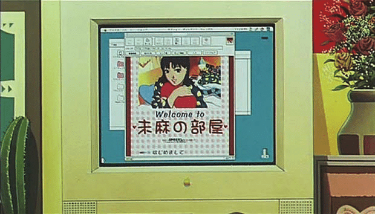

Should You Make a Website? - Nick64
Should You Make a Website? - Nick64

It depends. That’s a really unconclusive answer, sorry.
I think it’s a matter of how much effort you want to put into it and what you want to use it for.
For me, I did it because I wanted a place to post whatever I wanted to, like stupid rants or art or whatnot. It also gives me an outlet to be more creative about my profile, instead of a place like Twitter where it’s simply just the profile picture, background, and profile text, and that’s it. It’s not bad if you don’t mind it, I just really wanted to have somewhere more open and customizable to let my thoughts out on.
To be clear, I didn’t leave Twitter behind and make this site because of the whole Elon killing Twitter thing people were freaking out about it, just wanted to have a website. But while I’m at that topic, censorship is another thing too. I never really dealt with the censorship, so I can’t comment on the policies on other sites, but if that’s something you’re worried about, this is good then. I may not have things that need to be censored on here (I think) but it’s nice to know that nobody can take me down. Except the government, I guess.
I think the freedom of having your own platform is nice, but it was also really fun to customize the site and a great learning experience as well. I was not good with HTML or CSS prior to this, and I’m still not, but I did learn new stuff and, most importantly, I had a lot of fun changing things up every once in a while and writing posts.
I think another nice thing is that despite pretty much nobody at the time of writing checking the site as far as I know, I feel like it’s more comfy to have an audience that actually cares about checking into your sites and looking at your posts (or RSS) rather than people on Twitter who just scroll and like posts mindlessly. When you have a website dedicated to your content and not surrounded by other people’s content and also exposed to people who don’t care about your type of content, I feel like the connection to the audience feels more genuine.
Overall, making a website isn’t something that’s for everyone, but if you want to ensure freedom of speech, want to have more customization, but most importantly, have a lot of fun, this is a cool thing to do. There might be other reasons too, but those are the reasons I thought about myself and I feel like the biggest reasons for other people too. But hey, I’m just a random guy on the internet, so it’s up to you what you want to listen to.
Thanks for reading, and have a good day!
© 2022 Nick64 oh wait i dont care lol